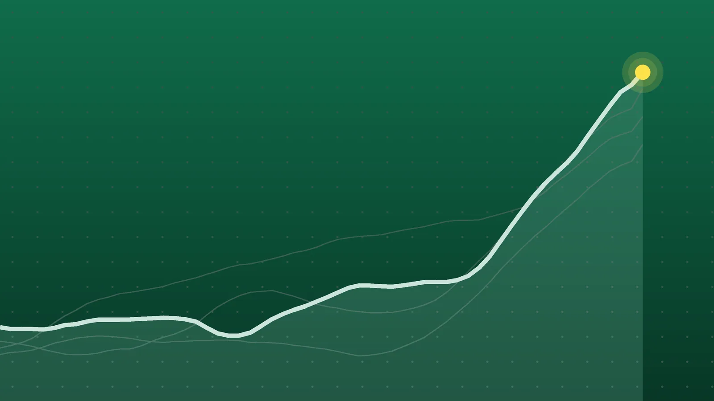

SportsExplainer
NZ vs IND 1st T20I: India Chase 226 in a Record Win
A jetlagged, short-handed India side scored at nearly 12 runs an over to win with two balls left, then Naman Dhir finished it with a top-edged six.

Quick take
- New Zealand scored 225 for 4, led by Glenn Phillips’ unbeaten 82 off 40 balls.
- India reached 230 for 6 in 19.4 overs, their highest successful chase in T20 Internationals, beating a previous best of 209.
- Sanju Samson top-scored with 67 off 33 balls, and Naman Dhir finished 42 not out off 15.
- India lead the five-match series 1-0. The second game is at Hagley Oval on Saturday, Oct. 24.
Why it's trending India beat New Zealand by four wickets in the opening match of a five-game T20 International series at Hagley Oval on Oct. 22, chasing a record 226.
What happened
NZ vs IND opened with a run-fest. India beat New Zealand by four wickets in the first of five T20 Internationals at Hagley Oval in Christchurch on Thursday, Oct. 22, chasing down 226 with two balls to spare.
That target is the biggest India have ever reached to win a T20I. Their previous best was 209, a total they chased against Australia in Visakhapatnam in 2023 and against New Zealand in Raipur earlier this year, NewsDrum reported. Outlook India said it was also the highest winning second-innings total ever made at Hagley Oval.
The two teams combined for 455 runs.
How New Zealand got to 225
India captain Shreyas Iyer won the toss and chose to bowl. It didn’t look like a good call for long.
Glenn Phillips carried the home side with 82 not out from 40 balls, hitting eight fours and three sixes. Finn Allen made 45 from 24 at the top of the order, and Bevon Jacobs struck 31 from 16, including three sixes. Phillips and Jacobs added 73 together for the fourth wicket, according to Outlook India.
New Zealand finished on 225 for 4. Mayank Yadav, Arshdeep Singh and Axar Patel took a wicket each. Bhuvneshwar Kumar, back in the side after nearly four years, went without a wicket for 49.
How India chased it
India’s openers made the target look smaller almost immediately. Abhishek Sharma hit the first ball of the chase for six, and he and Sanju Samson put on 93 in 5.5 overs. India were 94 for 1 after the six-over powerplay, IANS reported.
Samson reached 50 in 23 balls and made 67 from 33 with eight fours and four sixes before Mitchell Santner bowled him. New Zealand’s spinners then pulled things back, with Santner and Michael Bracewell taking two wickets each.
Iyer steadied the chase with 42 from 28, sharing stands of 45 with Axar Patel and 43 with Naman Dhir. When Iyer fell in the 19th over at 210 for 6, India still needed 16 from 11 balls.
Dhir needed eight off the final over from Matt Henry. He drove a full toss for four, then top-edged a short ball over the wicketkeeper for six to finish 42 not out off 15 balls.
The numbers behind the chase
| New Zealand | India | |
|---|---|---|
| Total | 225 for 4 (20 overs) | 230 for 6 (19.4 overs) |
| Run rate | 11.25 an over | About 11.7 an over |
| Powerplay (6 overs) | 65 | 94 for 1 |
| Top scorer | Phillips, 82* (40 balls) | Samson, 67 (33 balls) |
| Best bowling | Bracewell 2-37, Santner 2-39 | Mayank 1-40 |
The powerplay decided a lot. India were 29 runs ahead of New Zealand’s pace after six overs, which gave them room to lose wickets through the middle. Dhir’s strike rate of 280 (42 runs from 15 balls) closed it out.
IANS also noted that a Samson six was India’s 350th in T20Is this calendar year, the most by any team in a single year.
Why this result stands out
India came into the game with several reasons to struggle. The squad arrived jetlagged with little time to adjust, and it was missing Jasprit Bumrah and Hardik Pandya, Yahoo Sports noted. India had never played a men’s T20I at Hagley Oval, a ground known for seam movement and bounce.
New Zealand were also short of players, with Rachin Ravindra out with a dislocated shoulder. The series is the first meeting between the teams since India beat New Zealand by 96 runs in the T20 World Cup final in March.
What happens next
India lead 1-0. Each remaining game starts at 12:30 p.m. India time, which is 3 a.m. ET for the October games.
| Match | Date | Venue |
|---|---|---|
| 2nd T20I | Sat., Oct. 24 | Hagley Oval, Christchurch |
| 3rd T20I | Tue., Oct. 27 | Sky Stadium, Wellington |
| 4th T20I | Fri., Oct. 30 | Eden Park, Auckland |
| 5th T20I | Sun., Nov. 1 | Seddon Park, Hamilton |
In India the series streams on SonyLIV and airs on Sony Sports Network; in New Zealand it is on Sky Sport.
Quick answers
Who won the NZ vs IND 1st T20I?
India won by four wickets, scoring 230 for 6 in 19.4 overs to pass New Zealand’s 225 for 4.
What is India’s highest successful T20I chase?
It is now 226, set in this match. The previous record was 209.
When is the next India vs New Zealand T20I?
The second match is Saturday, Oct. 24, at Hagley Oval in Christchurch.
Sources
- IANS 1st T20I: Samson, Dhir star as India ace record chase of 226, beat New Zealand by four wicketsOct. 22, 2026
- NewsDrum Naman Dhir powers India's biggest T20I chase in four-wicket win over New ZealandOct. 22, 2026
- Outlook India Sanju Samson, Shreyas Iyer Power Record-Breaking Chase As India Beat New Zealand In High-Scoring 1st T20I At ChristchurchOct. 22, 2026
- Yahoo Sports IND vs NZ 1st T20I 2026 result, highlights and scorecardOct. 22, 2026